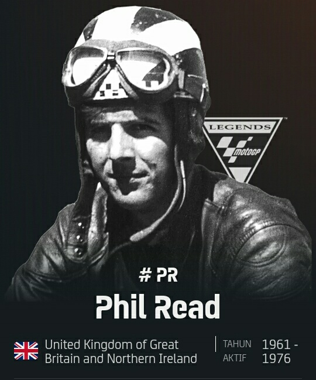
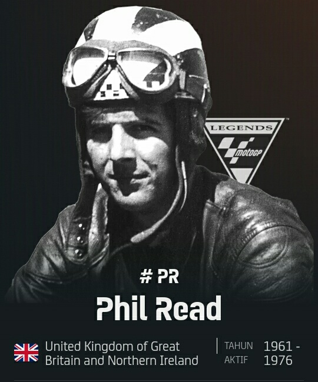

FIM MOTOGP WORLD CHAMPIONSHIP

Grand Prix Sepeda Motor (disingkat sebagai MotoGP) adalah seri kejuaraan balap
motor yang diselenggarakan di sirkuit jalanan yang disetujui dan diatur oleh Fédération
Internationale de Motocyclisme (FIM). Sejumlah ajang balap sepeda motor independen telah
digelar sejak awal abad ke-20 dan banyak ajang besar nasional mendapatkan nama Grand
Prix. Pendirian Fédération Internationale de Motocyclisme sebagai induk organisasi balap
motor sedunia tahun 1949 memberikan kesempatan untuk mengkoordinasikan aturan dan regulasi
sehingga ajang tersebut terpilih sebagai Kejuaraan Dunia resmi. Ini adalah kejuaraan dunia
balap motor tertua sepanjang sejarah.
Sepeda motor Grand Prix dirancang khusus untuk balapan, tidak dijual ke masyarakat umum dan,
secara hukum, dilarang dikendarai di jalan umum. Hal ini berbeda dengan misalnya, Kejuaraan
Dunia Superbike dan Isle of Man TT yang menggunakan sepeda motor biasa yang dimodifikasi.
Kelas tertingginya adalah MotoGP sejak 2002 kala era mesin empat tak mulai berkembang.
Sebelumnya, kelas tertingginya adalah 500 cc, keduanya menjadi penerus sejarah sebagai
Kejuaraan Dunia resmi, meski semua kelas memiliki status resmi
Saat ini Grand Prix Sepeda Motor terbagi menjadi empat kelas: MotoGP, Moto2, Moto3, dan MotoE.
Tiga yang pertama ini menggunakan mesin empat tak, sedangkan MotoE (baru mulai 2019) menggunakan
sepeda motor listrik.
Dalam sejarah Grand Prix, juara tersuksesnya adalah Giacomo Agostini dengan 15 gelar dan
kemenangan 122 balapan. Di seri tertingginya Agostini meraih delapan rekor gelar, menyusul
pembalap aktif Valentino Rossi dengan tujuh gelar dan Marc Márquez dengan enam gelar. Per 2019,
Rossi meraih 89 kemenangan balapan di kelas tertingginya.
SEJARAH

1949 sampai 1970
Kejuaraan dunia untuk balap motor pertama kali diselenggarakan oleh Fédération Internationale de
Motocyclisme (FIM), pada tahun 1949. Pada saat itu secara tradisional telah diselenggarakan beberapa
balapan di tiap event untuk berbagai kelas motor, berdasarkan kapasitas mesin, dan kelas untuk sidecars
(motor bersespan). Kelas-kelas yang ada saat itu adalah 50 cc, 125 cc, 250 cc, 350 cc, dan 500 cc untuk
motor single seater, serta 350 cc dan 500 cc untuk motor sidecars. Memasuki tahun 1950-an dan sepanjang
1960-an, motor bermesin 4 tak mendominasi seluruh kelas. Pada akhir 1960-an, motor bermesin 2 tak mulai
menguasai kelas-kelas kecil.
1970 sampai 2000
Pada tahun 1970-an motor bermesin 2 tak benar-benar menyingkirkan mesin-mesin 4 tak. Pada periode ini
beberapa motor seperti Kawasaki H1-R, MV Agusta 500 Three, memilih menggunakan mesin dua langkah tiga
silinder. Dengan motor tiga silinder nya, MV Agusta sukses memborong juara dunia pembalap dalam rentang
1966 - 1973. Tahun-tahun sebelumnya, MV Agusta juga sukses dengan motor empat silinder nya sejak 1956
- 1965 melalui pembalapnya John Surtees, Gary Hocking dan Mike Hailwood. Pemilihan mesin tiga silinder
biasanya dilatarbelakangi untuk mendapatkan bobot yang ringan sehingga sehingga mampu mengeksekusi
tikungan lebih cepat dan memperoleh hasil kualifikasi yang lebih baik
Pada tahun 1979, Honda berusaha mengembalikan mesin 4 tak di kelas puncak dengan menurunkan motor NR500,
namun proyek ini gagal, dan bahkan pada tahun 1983 Honda mampu meraih kemenangan dengan motor 500 cc 2
tak miliknya. Pada tahun 1983, kelas 350 cc akhirnya dihapuskan. Kelas 50 cc kemudian digantikan oleh
kelas 80 cc pada tahun 1984, tetapi kelas yang sering didominasi oleh pembalap dari Spanyol dan Italia
ini akhirnya ditiadakan pada tahun 1990. Kelas sidecars juga ditiadakan dari kejuaraan dunia pada tahun
1990-an, menyisakan kelas 125 cc, 250 cc, dan kelas 500 cc.
Di era 1997-an saat kebanyakan motor Grand Prix 500 menggunakan mesin empat silinder, KR3 Modenas tercatat
sebagai satu-satunya tim sekaligus pabrikan yang masih menggunakan mesin tiga silinder. Sayang sampai
dengan datangnya era 4-tak mesin tiga silinder KR3 tidak bisa berbuat banyak, karena kalah power dengan
mesin empat silinder meskipun di sisi lain memperoleh benefit dari segi bobot.
GP 500, kelas yang menjadi puncak balap motor Grand Prix, telah berubah secara dramatis pada tahun 2002.
Dari pertengahan tahun 1970-an sampai 2001 kelas puncak dari balap GP ini dibatasi 4 silinder dan kapasitas
mesin 500 cc, baik jenis mesin 4 tak ataupun 2 tak. Akibatnya, yang mampu bertahan adalah mesin 2 tak, yang
notabene menghasilkan tenaga dan akselerasi yang lebih besar.
2002
Merupakan tahun transisi, periode terakhir mesin dua langkah diperlombakan dalam kompetisi kelas premier.
Sepanjang tahun 2002 sampai 2006 untuk pertama kalinya pabrikan diizinkan untuk memperbesar kapasitas total
mesin khusus untuk mesin 4 tak menjadi maksimum 990 cc, dan berubah menjadi 800 cc di musim 2007. Pabrikan
juga diberi kebebasan untuk memilih jumlah silinder yang digunakan antara tiga sampai enam dengan batas berat
tertentu. Dengan dibolehkannya motor 4 tak ber-cc besar tersebut, kelas GP 500 diubah namanya menjadi MotoGP.
Seluruh tim pabrikan seperti Yamaha, Honda, dan Suzuki masing-masing memilih untuk berkompetisi menggunakan
mesin empat langkah terbarunya. Praktis, hanya tim satelit saja yang masih berkompetisi menggunakan mesin 500
cc dua langkah.
2003
Seluruh tim di kelas premier motoGP tidak ada lagi yang menggunakan mesin dua langkah. Tersisa kelas 125 cc
dan 250 cc saja yang masih belum diatur transisi nya menuju ke era empat langkah. Setelah tahun 2003 tidak
ada lagi mesin 2 tak yang turun di kelas MotoGP. Untuk kelas 125 cc dan 250 cc secara khusus masih menggunakan
mesin 2 tak.
2007 sampai saat ini
Perubahan yang terjadi sebatas perihal kubikasi maksimal yang diperkenankan yang diturunkan menjadi maksimum
800 cc pada tahun 2007 dan berlangsung selama lima musim. Pada tahun 2012 hingga sekarang, batas kubikasi mesin
ini kembali dinaikkan menjadi 1,000 cc dan ukuran diameter piston dibatasi maksimal 82mm saja. Balap untuk kelas
MotoGP saat ini diselenggarakan sebanyak 17 seri di 15 negara yang berbeda (Spanyol menggelar 3 seri balapan).
Balapan biasa digelar setiap akhir pekan dengan beberapa tahap. Hari Jum'at digelar latihan bebas dan latihan
resmi pertama, kemudian hari Sabtu dilaksanakan latihan resmi kedua dan QTT, di mana para pembalap berusaha
membuat catatan waktu terbaik untuk menentukan posisi start mereka. Balapan sendiri digelar pada hari Minggu,
meskipun ada seri yang digelar hari Sabtu yaitu di Belanda dan Qatar. Grid (baris posisi start) terdiri dari 3
pembalap perbaris dan biasanya setiap seri balap diikuti oleh sekitar 20 pembalap. Balapan dilaksanakan selama
sekitar 45 menit dan pembalap berlomba sepanjang jumlah putaran yang ditentukan, tanpa masuk pit untuk mengganti
ban atau mengisi bahan bakar. Balapan akan diulang jika terjadi kecelakaan fatal di awal balapan. Susunan grid
tidak berubah sesuai hasil kualifikasi. Pembalap boleh masuk pit jika hanya untuk mengganti motor karena hujan
saat balapan.
SIRKUIT DAN KALENDER
1. Lusail International Circuit
Internasional Losail (bahasa Inggris: Losail International Circuit)
(Arab: حلبة لوسيل الدولية) merupakan sebuah sirkuit balap yang terletak di luar
Lusail di utara Doha, Qatar. Dibangun kurang lebih satu tahun dan menelan biaya
sebesar $58.000.000, sirkuit ini dibuka dan menggelar balapan pertama Grand Prix
sepeda motor musim 2004, yang dimenangkan oleh Sete Gibernau. Layout sirkuit ini
terbentang kira-kira seluas 5,4 km yang dikelilingi oleh rumput buatan untuk
mencegah pasir dari gurun sekitar bertiup ke sirkuit. Trek lurus utama memiliki
panjnag lebih dari 1 km. Pada tahun 2008, Grand Prix Sepeda Motor Qatar merayakan
Grand Prix malam hari untuk yang pertama kalinya dalam sejarah, menyusul pembangunan
pencahayaan luar ruangan permanen. Pada tanggal 30 September 2021, Formula Satu
secara resmi mengumumkan bahwa mereka akan menambahkan Sirkuit Internasional Losail
ini untuk musim 2021. Mereka juga telah mengadakan kontrak selama 10 tahun terhitung
mulai musim 2023 hingga musim 2032
2. Autodromo Internacional do Algarve
Sirkuit Internasional Algarve (Portugal: Autódromo Internacional do Algarve),
biasa disebut juga dengan Sirkuit Portimão, adalah sebuah sirkuit yang sepanjang 4.692
kilometer (2.915 mi), dan terletak di Portimão, Portugal. Sirkuit yang pembangunannya
menelan biaya sebesar €195.000.000 ini sudah termasuk trek karting, taman teknologi,
hotel bintang lima, kompleks olahraga, dan apartemen. Sirkuit ini dirancang oleh Ricardo
Pina, Arquitectos. Pembangunan sirkuit ini selesai di bulan Oktober 2008 dan dihomologasi
oleh FIM pada tanggal 11 Oktober 2008, lalu oleh FIA dua hari kemudian. Total biaya
mencapai €195 juta (sekitar $250 juta).
3. Termas de Rio Hondo
Autódromo Termas de Río Hondo merupakan sebuah sirkuit balap yang terletak di Termas de Río
Hondo, Argentina. Sejatinya sirkuit ini siap dipakai untuk gelaran MotoGP pada musim 2013
tetapi pemerintah Spanyol mengatakan tidak aman bagi kru Repsol untuk balapan di Argentina
karena masalah keamanan. Sehingga pihak Dorna membatalkan gelaran Gran Premio de la Republica
Argentina 2013 Argentina dipastikan akan menggelar ajang MotoGP mulai musim 2014
(terakhir kali pada musim 1999) setelah ada penandatanganan kontrak antara Direktur Event Dorna,
Javier Alonso; Menteri Pariwisata Argentina, Enrique Meyer; dan Gubernur Santiago del Estero
Gerardo Zamora pada 4 Juli 2013.
4. Circuit of The Americas
Circuit of the Americas (COTA, sebelumnya bernama Sirkuit Internasional Austin) merupakan
sebuah sirkuit balapan mobil dengan panjang 5,5 km (3,4 mil) yang terletak di negara bagian
Texas, Amerika Serikat, tepatnya di kota Austin, dan merupakan sirkuit pertama di Amerika
yang dirancang khusus untuk menggelar ajang Formula Satu. Selain menggelar balapan F1 yang
bertajuk Grand Prix Amerika Serikat, sirkuit ini juga menggelar balapan Americas Rallycross,
dan Grand Prix Sepeda Motor. Tadinya, sirkuit ini menggelar American Le Mans Series, V8
Supercars, dan IMSA WeatherTech SportsCar Championship. Di tahun 2021 mendatang, NASCAR akan
membalap di sirkuit ini.
5. Circuito de Jerez-Angel Nieto
Sirkuit Jerez merupakan sebuah sirkuit otomotif yang terletak di Jerez de la Frontera,
Spanyol. Sirkuit ini memiliki panjang 4,428km, dan saat ini menjadi salah satu bagian dari
kalender MotoGP. Sirkuit ini juga pernah menggelar balapan F1, dan yang paling terkenal
adalah saat kasus kontroversi Michael Schumacher di GP Eropa 1997 yang menabrakan mobilnya
pada Jacques Villeneuve. Sirkuit ini sendiri saat ini juga dipakai sebagai tempat tes resmi
ketika musim F1 sedang libur. Pada 3 Mei 2018, sirkuit dinamai untuk menghormati mantan
pembalap sepeda motor Ángel Nieto, yang meninggal pada 2017.
6. Le Mans
Circuit de la Sarthe atau dikenal juga dengan nama Sirkuit Le Mans, merupakan sebuah sirkuit
yang terletak di yang terletak di dekat Le Mans, Prancis. Sirkuit ini terkenal sebagai salah
satu sirkuit terpanjang di dunia dengan total panjang 13,629 km. Sirkuit ini merupakan salah
satu sirkuit legendaris karena setiap tahunnya selalu diadakan balap ketahanan 24 Hours of Le
Mans.
7. Circuit de Barcelona-Catalunya
Circuit de Barcelona-Catalunya merupakan salah satu sirkuit balap yang terletak di Montmeló,
Barcelona, Spanyol.Sirkuit ini dipakai untuk balapan Formula Satu, GP2, MotoGP, dan Spanish GT.
Jumlah tikungan di sirkuit ini ada 13. Di MotoGP tahun 2006 Marco Melandri, Sete Gibernau, Loris
Capirossi, Randy de Puniet, dan Daniel Pedrosa mengalami kecelakaan di tikungan pertama. Sirkuit
ini memiliki panjang 4,627 km, dan memiliki kapasitas tempat duduk sebesar 140,700. Sirkuit ini
adalah sirkuit bersertifikasi Grade 1 FIA.
8. Autodromo internazionale del Mugello
Sirkuit Internasional Mugello (atau bernama asli Autodromo Internazionale del Mugello) merupakan
sebuah sirkuit balap yang terletak di Scarperia e San Piero, Florence, Toskana, Italia. Sirkuit ini
dibangun pada tahun 1974, dan memiliki panjang 5.245 kilometer (3.259 mi), dan 15 belokan. Kapasitas
tempat duduknya adalah 50,000 orang.
9. Sokol International Racetrack
Sokol International Racetrack (juga dikenal sebagai Sokol Circuit) - bahasa Kazakh: Сокол халықаралық
ипподромы, bahasa Rusia: Сокольский международный ипподром, translit. Sokol'skiy mezhdunarodnyy ipodrom)
adalah sirkuit balap motor 76 km (47 mi) barat laut Almaty, Kazakhstan. Sirkuit 4.495 km (2.793 mi)
dirancang oleh Hermann Tilke dan dipasarkan sebagai trek FIA Grade 2
10. TT Circuit Assen

TT Circuit Assen merupakan sebuah sirkuit balap di Belanda yang terletak di dekat Assen. Sirkuit ini
dibangun pada tahun 1955 dan digunakan untuk kejuaraan Superbike dan MotoGP. Sirkuit ini dibangun untuk
tujuan TT Belanda tahun 1954, dengan peristiwa sebelumnya telah diadakan di jalan umum. Trek sempit,
dengan perubahan yang cepat dalam arah, dan sepenuhnya dikelilingi oleh bank rumput dan podium, memberikan
tampilan yang sangat baik bagi ratusan ribu penonton fanatik yang tertarik ke acara paling bergengsi di
Belanda setiap tahun. Sirkuit ini memegang rekor sebagai satu-satunya sirkuit yang selalu menyelenggarakan
acara Grand Prix Sepeda Motor setiap tahun sejak tahun 1949.[1] sirkuit ini dapat menampung 100.000 penonton,
termasuk 60,000 tempat duduk. Sejak 1992, sirkuit ini juga menyelenggarakan Superbike World Championship.
11. Sachenring
Balapan digelar untuk pertama kali pada 26 Mei 1927 di jalan umum sepanjang 8.7 km, menyusuri wilayah
pedesaan dari Hohenstein-Ernstthal itu sendiri yang kala itu sering disebut "Sachsenring". Grand Prix sepeda
motor seri Jerman Timur digelar dari tahun 1962 hingga 1971. Lap tercepat diraih oleh juara dunia 15 kali,
Giacomo Agostini mengendarai MV Agusta dengan kecepatan rata-rata 180 km/jam. Setelah Dieter Braun yang
berasal dari Jerman Barat menang dan dinyanyikan lagu kebangsaan Jerman Barat, peserta balap dibatasi hanya
untuk pembalap dari Eropa Timur karena alasan politik.
12. Silverstone Circuit
Sirkuit Silverstone merupakan sebuah sirkuit balap yang terletak di Silverstone, Inggris, dekat Pedesaan
Northamptonshire. Sirkuit ini menjadi rumah Grand Prix Britania, yang diselenggarakan pertama kali pada tahun
1948. Di Formula Satu, Michael Schumacher mengalami kecelakaan di sirkuit ini pada Juli 1999, dimana ia
mengalami patah kaki. Sirkuit ini dibuka di tahun 1948 sebagai bekas lapangan terbang militer kerajaan
Britania Raya. Sejak saat itu berbagai macam renovasi mulai dilakukan agar sirkuit tidak terlalu terlihat
seperti lapangan terbang, dan renovasi terakhir dilakukan di musim 2010 seiring berbagai macam balapan yang
singgah di sirkuit ini
13. Red Bull Ring-Spelberg
Red Bull Ring merupakan sirkuit balapan di Spielberg, Steiermark, Austria.Sirkuit ini dibangun dengan nama
Österreichring dan menjadi tuan rumah Grand Prix Austria dari tahun 1970 sampai 1987. Selang beberapa tahun
kemudian, sirkuit ini direnovasi, dipendekkan dan berganti nama menjadi A1-Ring yang kemudian menggelar balapan
F1 dari tahun 1977 sampai 2003. Sejak 2011 sirkuit ini berganti nama lagi menjadi Red Bull Ring dengan
kepemilikan sirkuit yang diambil alih oleh perusahaan minuman Red Bull. Tikungan pertama di sirkuit ini
bernama "Niki Lauda Kurve", untuk menghormati Niki Lauda yang meninggal dunia di Zürich, Swiss pada tahun 2019.
Tikungan ketujuh di sirkuit ini adalah tikungan Rindt, dinamai setelah Jochen Rindt yang meninggal dunia akibat
kecelakaan fatal pada perlombaan Grand Prix Italia 1970 di Autodromo Nazionale Monza.
14. Motorland Aragon
Grand Prix Sepeda Motor Aragon merupakan acara balap motor yang menjadi bagian dari F.I.M. Grand Prix
Sepeda Motor. Seri ini tergolong baru karena baru masuk dalam kalender MotoGP musim 2010
15. Misano world Circuit Marco Simoncelli
Misano World Circuit Marco Simoncelli (sebelumnya dikenal dengan nama Misano World Circuit dan sebelum 2006
dikenal dengan nama Circuito Internazionale Santa Monica), juga dikenal sebagai Sirkuit Marco Simoncelli,
merupakan sebuah sirkuit balap di Italia yang terletak di dekat kota Misano Adriatico. Sirkuit ini memiliki
panjang 4.064 km (2.525 mil), dan biasa dipakai sebagai tempat penyelenggaraan balapan MotoGP dan World
Superbike. Untuk kalender roda empat sendiri, sirkuit ini biasa dipakai sebagai tempat balapan Formula
Renault dan FIA Sportscars.
16. Buddh International Circuit
Sirkuit Internasional Buddh (Hindi: बुद्ध अन्तर्राष्ट्रीय परिपथ) adalah sebuah sirkuit yang terletak di Greater Noida,
sekitar 50 km dari New Delhi, India. Nama trek ini berasal dari Gautama Buddha, dan juga Distrik Gautam Buddha
Nagar yang menjadi lokasi trek ini. Trek ini diresmikan pada tanggal 18 Oktober 2011.[3] Sirkuit ini terkenal
karena menjadi tempat penyelenggaraan balapan Formula Satu pada bulan Oktober 2011 dengan tajuk Grand Prix
India.[4] Namun, Grand Prix ini ditangguhkan untuk tahun 2014, dan kemudian dibatalkan karena perselisihan
pajak dengan Pemerintah Uttar Pradesh selama pemerintahan Akhilesh Yadav
17. Pertamina Mandalika Internatonal Circuit
Sirkuit Internasional Pertamina Mandalika (secara resmi bernama Pertamina Mandalika International Circuit)
adalah sebuah sirkuit balap yang terletak di Kawasan Ekonomi Khusus Mandalika (KEK Mandalika) di Lombok Tengah,
Nusa Tenggara Barat. Sirkuit dengan panjang lintasan 4,31 km dan 17 tikungan ini memiliki kelas homologasi
kelas A dari FIM. Selain digunakan sebagai tempat penyelenggaraan MotoGP, Sirkuit ini juga menjadi tuan
rumah berbagai pagelaran lain seperti World Superbike, Kejurnas Mandalika Racing Series, Shell Eco-marathon,
dan National Track Day. Mandalika pertama kali menggelar Grand Prix Sepeda Motor Indonesia pada Maret 2022
setelah sukses menyelenggarakan Kejuaraan Dunia Superbike pertamanya pada bulan November 2021.
18. Mobility Resort Motegi
Mobility Resort Motegi, sebelumnya dikenal dengan nama Twin Ring Motegi, adalah Sirkuit motorsport yang
terletak di kota Hiyama Motegi, Distrik Haga, Tochigi, Jepang. Sirkuit ini dibangun oleh Honda pada tahun
1997 untuk membawa Indycar ke Jepang dan digunakan juga sebagai laboratorium bagi Honda. Pada 1 Maret 2022,
nama sirkuit berubah dari sebelumnya Twin Ring Motegi menjadi Mobility Resort Motegi bersamaan dengan ulang
tahun yang ke-25 untuk sirkuit ini.
19. Philip Island
Sirkuit Grand Prix Phillip Island adalah sebuah sirkuit balapan yang terletak di Pulau Phillip, Australia.
Sirkuit ini memiliki panjang 4,4 km dan telah dibuka sejak tahun 1928. Sirkuit ini telah sukses menggelar
beberapa balapan diantaranya Grand Prix Australia, MotoGP, World Superbike dan beberapa balapan lokal
lainnya.
20. Chang International Circuit
Sirkuit Internasional Buriram atau Sirkuit Internasional Chang untuk alasan sponsor (bahasa Thai: ช้าง
อินเตอร์เนชั่นแนล เซอร์กิต, bahasa Inggris: Chang International Circuit) merupakan sebuah sirkuit balap yang
terletak di provinsi Buriram, Thailand atau sekitar 392 km dari Ibu kota Bangkok. Sirkuit yang dirancang
oleh Hermann Tilke ini mulai dibangun pada Maret 2013 dan telah menelan biaya sebesar 2 miliar Baht (sekitar
Rp 740 miliar). Sirkuit ini mulai dibuka pada 4 Oktober 2014 dan memiliki panjang lintasan 4.554 meter serta
12 tikungan.
21. Petronas Sepang International Circuit
Sirkuit Internasional Sepang (Sepang International Circuit/SIC) (dalam Bahasa Melayu: Litar Antarabangsa
Sepang), saat ini dikenal sebagai Sirkuit Internasional Petronas Sepang untuk alasan komersial, Merupakan
sebuah sirkuit yang terletak di Sepang, Selangor, Malaysia. Jaraknya kira-kira 45 km (28 mi) dari Kuala
Lumpur. dari tahun 1999 sampai dengan tahun 2017, sirkuit ini digunakan untuk Grand Prix Malaysia Formula
Satu. Selain ajang F1, di sirkuit ini juga pernah digelar A1 Grand Prix, Grand Prix Sepeda Motor Malaysia,
dan berbagai macam event olahraga otomotif yang lainnya.
22. Circuit Ricardo Tormo
Circuit Ricardo Tormo merupakan sebuah sirkuit balap di Spanyol yang terletak di dekat Valencia. Sirkuit ini
dibangun pada tahun 1999 dan mengadakan balapan pertama MotoGP dan Spanyol motor Championships pada tahun yang
sama. Jalur Cheste memiliki beberapa layout, menjalankan anti-searah jarum jam dengan panjang yang bervariasi.
Circuit Ricardo Tormo memiliki trek yang terdiri dari lima 4 km sudut tangan kanan, delapan handers kiri dan
trek lurus sejauh 650m. Meskipun melihat jalur yang dianggap cukup kecil, sirkuit ini memiliki kompleks pit
berisi 48 garasi dan podium stadion dapat menampung hingga 150.000 penonton.


 
